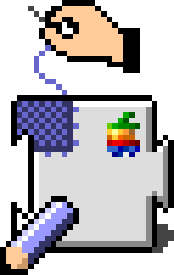
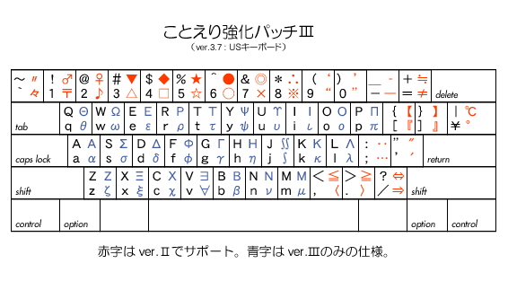
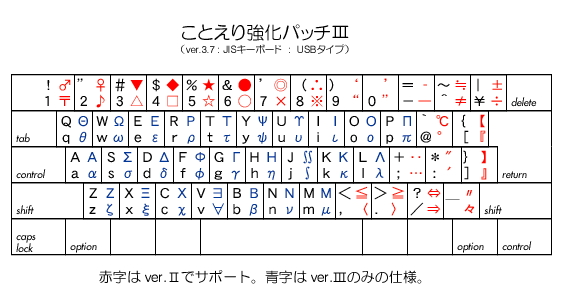

Welcome to Kotoeri Kyoka Patch/Files support page !

ようこそ！こちらは『ことえり強化パッチ（ファイルズ）』のサポートページです。
【概略：ver. 3.8.7】（※Mac OS X 版は ver. 2.9.1 です）
Mac OS 付属の入力ソフトである『ことえり』は、
市販のものに比べると、カスタマイズという点で 大幅に見劣りします。
また、純正ソフトでありながら、Apple社のガイドラインに外れている部分も散見されます。
このパッチ（ファイル）は、それらの不足分を補い、修正していこうとするものです。
具体的には、
（１）モード変更なし＆変換操作なしで 英字入力ができるようになる。
（※かな入力/ローマ字入力にかかわらず）
（２）使いにくいショートカットが 使いやすくなる。
・JISキーボードの かな／英数キーを使った機能設定を追加。
・Pro Keyboard 等の編集用キーを活用。
・iBook 等での文字入力にも配慮。など。
（３）従来 入力しにくかった記号類が ラクに打てる。
モード変更をせずに、option＋controlを使うだけで、48種類もの記号が、
シフトを使えば さらに倍の数の記号が、簡単に入力できるようになります。
なお、このパッチを作成する上で、
菅原@むつ市さんが解析された keyc リソースのリストを参考にさせていただきました。
深く感謝いたします。ｍ(_ _)ｍ
【解説】
（１）モード変更なし＆変換なしで 英字入力
これは何がいいかというと、一般に かな入力では、
英字や記号類の入力が面倒だと思われていますが、
Macのキーボードにある optionキーを併用して、
かなモードのままで 英字や記号類が入力できるようになります。
（※元々optionキーは、英字の記号を入力するためのキーです）
もちろん、shiftキーも併用できますので、
よく使われるカッコやハテナマークなどの記号類も、
簡単に入力できるようになります。
さらにまた、そのようにして入力された英字や記号は、
変換ウィンドウの中では、“読み”として使えるので、
拙作『MadDic１(E)』によって、
頭文字入力／短縮入力が可能になります。（ ⇒ 英字入力に関するページ ）
（２）機能キー設定の追加詳しいことは 添付の書類を見ていただくとして、
一例を挙げると、例えば、操作パレット表示※ help / shift＋esc（control＋shift＋Ｇ）〈※ことえ り４には ありません〉
文字パレット表示 control＋F11（control＋shift＋Ｂ※）〈※ことえり４では ショートカットは ありません〉
辞書ツール起動※ control＋shift＋enter（control＋shift＋Ｔ）〈※ことえり４ では 単語登録とセットになっています〉
単語登録… control＋enter（control＋shift＋Ｎ）
環境設定を表示 control＋F12（control＋shift＋Ｕ※）〈※ことえり４では ショートカットは ありません〉
再変換 control＋return（control＋shift＋Ｒ）
読みを再入力 control＋space（control＋shift＋Ｙ）ひらがなを入力 F6（かな / control＋shift＋Ｊ）
カタカナを入力 F7（shift＋かな / control＋shift＋Ｋ）
英字全角を入力 F8 / shift＋英数（control＋shift＋Ｌ）
半角英字を入力 F5 / F13（英数 / control＋shift＋；）
半角カナを入力※ option＋shift＋かな〈※ただし半角カナの入力が可能になっている 時に限る〉
入力モード順次切替 option＋shift＋return（option＋shift＋tab）
全削除 control＋delete（clear）
変換の解除 option＋delete（esc）
確定の取り消し※ control＋option＋delete（control＋delete）〈※ことえり４のみ〉ひらがなに変換 shift＋space（control＋Ｊ）
カタカナに変換 option＋space / control＋かな（control＋Ｋ）
英字全角に変換 option＋shift＋space / control＋英数（control＋Ｌ）
半角英字に変換 enter / control＋option＋space（control＋；）
文字種順次変換 option＋return（option＋tab）
変換対象を左へ control＋，（← / control＋Ｂ）
変換対象を右へ control＋．（→ / control＋Ｆ）
変換対象を収縮 control＋shift＋＜（shift＋← / control＋Ｉ / control＋Ｑ）
変換対象を拡張 control＋shift＋＞（shift＋→ / control＋Ｏ / control＋Ｗ）
次候補を選択 control＋／（→ / control＋Ｎ / space）
前候補を選択 control＋Ｍ（← / control＋Ｐ / shift＋space）
次候補群スクロール control＋↓ / control＋→ / page down / control＋shift＋／（control＋Ｖ）
前候補群スクロール control＋↑ / control＋← / page up / control＋shift＋Ｍ（control＋Ｒ）
（※ことえり２では、候補群ウィンドウの出現位置によって、スクロール方向が異なる場合があります）
などがあります。
（※カッコ内は デフォルト〈※ただし代表的なもののみ〉）
（※ことえり２版と ことえり４版の設定は 若干 異なる場合があります）
（３）option＋control（＋shift）で 記号入力
JISコードには、キーボードに刻印されている記号だけでなく、
マルやバツ、郵便番号マーク、音符など、様々な記号が用意されています。
これらの一部は、ことえりでは、
英字モードで(*) optionキーを使って入力することができますが、
その配置には、法則性がなく、一般の使用頻度とも関係がありません。
（* ローマ字入力では、かなモードと英字モードで、出せる記号が異なります）
これを、一般的な使用頻度を考慮し、かつ、
キーボードに刻印がなくても その配置が覚えやすくなるよう関連性を持たせ、
かつ、入力モードに関係なく「option＋control(＋shift)」を併用するだけで、
入力できるようにしてみました。(^_^)
もともとの ことえりでも、テンキーの演算記号キーを使って、
和文で使われる演算記号が打てるようになっていますが、
そういう意味では、この記号入力の部分に関しても、
“強化”が必要なのではないかと思います。(^_^;
仕様は以下の通りです。（赤字の部分）

図１基本仕様（ＵＳキーボード使用時：参考資料）

図２JISキーボード使用時（Mac OS 9 版/ことえり2.3.x用）
また、これらの他にも、カーソルコントロールキーを使って、
上下左右の矢印記号が入力できるようにもなります。
ダウンロードは こちら(2.3.6 用：公開版・ver.2.2)から。
（※2.3.3用は 今のところ、ver.1.2し か 公開していませんが、
アップデーターを使えば、ほとんど同じものが使えるようになります）
※関連リンク： 『MacLHA』（石崎一明さん作）
なお、『ことえり強化パッチ』の ことえり４用(Mac OS X 版*)を、本ＨＰ内に限り、
暫定的に配布することにします。
（* Mac OS X 版は バージョン２です...^^;;;）
ただし、Mac OS X では、システムリソースにパッチを当てるというようなわけにはいかないので、
入れ替えるには、管理者権限が必要となります。（たいがいはマシンのオーナーです）
当該ファイルを手動で入れ替えていただくことになります。
（※そのため、Mac OS X 版は『ことえり強化ファイルズ』と呼ぶことにします...^^;;;）
入れ替えるファイルは、
「System/Library/Components/Kotoeri.component/Contents/Resources」内の
「KotoeriKeys.plist」と「ShortcutDict.plist」です。（※Mac OS X 10.4.11までの場合）
（※「Kotoeri.component」を開く時には コンテキストメニューから開きます）
（※Mac OS X 10.6.4等では、ファイルの場所は
「/System/Library/Input Methods/Kotoeri.app/Contents/Resources」内になります）当然ですが、自己責任で、元のファイルも捨てないで、保存しておいてください。
ダウンロードは こちら から。（2010 年10月16日版：JISキーボード対応版）
（※Mac OS X 10.4.11以降対応版。ただし、10.6.4を除く10.5以降は、動作未確認）
（※当該ファイルのみです。マニュアルはありません）
（Mac OS X 10.3.9〜10.4.7版は こちら ）
・・・・・・・・・・・・・・・・・・・・・・・・・・・・・・・・・・・・・・・・
【バージョン３について】
バージョン３での改訂の目玉は、
「ギリシャ文字」入力です。(^-^)/
ただし、これ、前からわかっていた＆告知していた通り、
『ResEdit』を 使った追加／修正には、
扱えるリソースフォークの数に限度があるため、
今まで手を付けていなかった部分をつぶして(爆)*、
ギリシャ文字24文字×大文字＆小文字を配置しています。
（* 具体的にいうと、指定変換のほとんどの部分と普通使わない設定）
また、それらの記号を入力するための併用キーとして、
「option＋control」を 使用しているため、
今までのハイパーダイヤモンドカーソルは使えなくなります。(^.^;;;
しかし、人によっては、それだけの損失(?)を伴っても、
１ストロークで ギリシャ文字が打てるのだったら仕方がないと
捉えていただける人もいると思います。(^_^;
（＃私もその１人なのですが...）
ただ、今さら Mac OS 9 かよって感じもしなくもないんですよね。(苦笑)
そこで、対象となるユーザーが おそらく限られているであろうということで、
すでにＫＫＰ３の施されている ことえりを そのまま(爆)ＵＰすることにします。(^.^;;;
そのため、インストールは、お使いの ことえりと入れ替えて 再起動すれば オッケーです。
注意点は、当然ながら自己責任ということで、
これを使ったことによって万一何らかの不具合が生じたとしても、
当方では一切責任を持ちません。(^_^;
（※ウイルスチェックはしてあります。by NAV 10.1.2）
なお、マニュアル等は 特にありません。
使い方は ver.2.2等と同じです。
その他、細かい話やサポートは、掲示板のほうで 随時していきます。
ご意見・ご感想をお待ちしております。ｍ(_ _)ｍ
ダウンロードは こちら (2.3.6用： ＨＰ限定最新版)です。
（2010年11月5日版：itlk＆Classic環境対応・ＨＲＮ機能付）
〔ＨＲＮ機能抜き版：2009年 5月17日版〕
（※ことえり４用は、現在のところ 作っていません...^^;;;）
・・・・・・・・・・・・・・・・・・・・・・・・・・・・・・・・・・・・・・・・
【さらに ＨＰ特典あり！！！(爆)(爆)(爆)】
私が ことえりを けっこう気に入っている理由の一つとして、
「記号が読みに使える！！！」ということがあります。
これまで述べてきた通り、ＫＫＰを使うと、その副産物(笑) として、
記号入力がラクになる！！ということがあるわけですが、
だったら、これを読みとして使わぬテはない！！！ということで、(笑)
ひそかに、自分で単語登録して使っていたわけです。
最近、ようやく、一通りのものが完成した感じがするので、
ちょっとお披露目してみようかなという気になりました。(^.^;;;
一例を挙げると、まず、
ＫＫＰでは 単独ではキーに割り当てられていない文字を入力するために
他の記号を読みとして使うという方法が考えられます。
（例：▲▽◇■《》〔〕＼§¶†‡√¬∠⊥⌒仝〆...）
さらに、それらを連打読みとすることによって、
省入力や同音異義語の打ち分けに使うことができます。(^-^)
（例：△△→三角〈さんかく＝参画〉 □□→四角〈しかく＝資格/視覚/...〉）
（ ≦≦→以下〈いか＝烏賊/医科/...〉 ≧≧→以上〈いじょう＝異常/委譲/...〉）
もちろん、普通に、かなや英字の読みと組み合わせて、
同音異義語の打ち分けや、省打鍵対策として使うこともできます。
（例：男物→♂もの/♂ｍ，女物→♀もの/♀ｍ，温度→おん℃/ｏ℃〈おんど＝音頭/音戸〉）
（ この他、矢印記号で「上」「下」「左」「右」など...）
このフィーチャーは、MadDicシリーズのう ち、
MadDic１ファミリーとMadDic４に搭載され ています。
（※あくまでも省入力の一環として捉えており、
他のかな読みや英字読みと併用して使うことを想定しているので、
単独でのリリースは 今のところ 考えていません）
…ということで、もし使ってみたいという方がお られましたら、
それそれのページからダウンロードしてください。 (^_^;
※現在、辞書の再構成中につき、MadDic１等に含まれていた登録語彙は、移転中(爆)です。
|
|
|